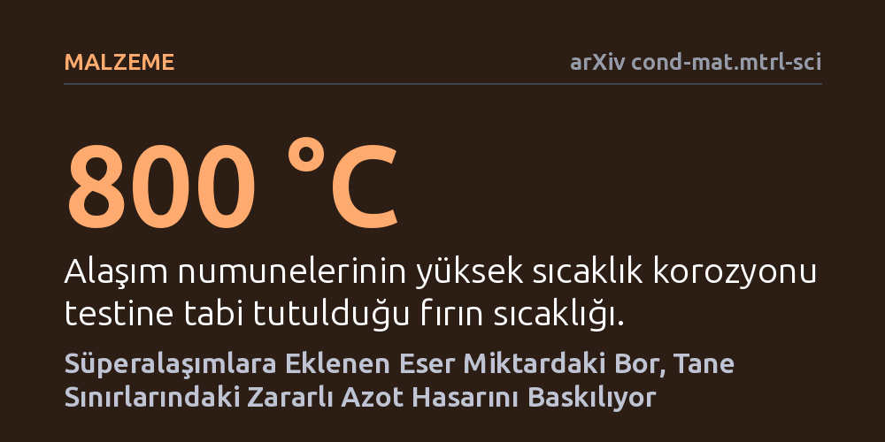

MALZEME · arXiv cond-mat.mtrl-sci · 2026-10-24
Jet motoru süperalaşımlarında bor katkısının yüksek sıcaklıktaki azot hasarına etkisi incelendi. Araştırmacılar, eser miktardaki borun nitrür-matris arayüzeyine ayrılarak tane sınırlarında kırılganlığa yol açan derin ve iri parçacıkların büyümesini baskıladığını saptadı.
Alaşımın ana kimyasını değiştirmeden sadece eser miktarda bor ekleyerek, jet motoru parçalarını yüksek sıcaklıkta içten çatlatan azot hasarının engellenebileceğini gösteriyor.

Modern jet motorlarının en sıcak bölümlerinde görev yapan türbin parçaları, aşırı mekanik yüke ve bin dereceyi aşan sıcaklıklara dayanabilen nikel ve kobalt bazlı süperalaşımlardan üretilir. Bu alaşımların dış yüzeyinde kendiliğinden oluşan ince oksit tabakaları metali dış ortamdaki oksijenden korur. Ancak motorun çalıştığı aşırı sıcak hava ortamında başka bir sinsi tehlike devreye girer: Azot atomları.
Havadaki azot, yüzeydeki koruyucu oksit örtüsünün altından metalin iç kısımlarına doğru sızabilir. Polikristal yani çok kristalli yapıya sahip bu metallerde, kristal taneciklerinin birleştiği zayıf hatlar olan tane sınırları azotun ilerlemesi için adeta bir yol oluşturur. Tane sınırlarına ulaşan azot, alaşımın içindeki titanyum ve niyobyum gibi elementlerle birleşerek sert ve kırılgan nitrür çökeltileri meydana getirir. Bu çökeltiler malzemenin esnekliğini yok ederek çatlamalara ve motor parçalarının ömrünün hızla tükenmesine neden olur.
Metalurji uzmanları uzun yıllardır süperalaşımlara binde bir oranında eser miktarda bor eklemenin tane sınırlarını mekanik olarak güçlendirdiğini biliyordu. Fakat borun, yüksek sıcaklıkta içeri sızan gazların yarattığı korozyon ve nitrürleşme hasarı üzerinde nasıl bir rol oynadığı bugüne kadar tam olarak aydınlatılamamıştı.
Araştırmacılar bu sorunun cevabını bulmak için kontrollü bir laboratuvar deneyi kurguladı. Biri hiç bor içermeyen, diğeri ise eser miktarda bor katkılı iki farklı nikel-kobalt süperalaşım numunesi hazırlandı. Her iki alaşım da jet motorlarının sıcaklık rejimini temsil eden 800 santigrat derecede 100 saat boyunca fırınlandı. Süre sonunda yüzeyin hemen altında meydana gelen değişimler, atomların tek tek konumunu ve türünü belirleyebilen ileri mikroskopi yöntemleriyle incelendi.
Deney sonuçları, her iki alaşımın da yüzeyinde benzer koruyucu oksit tabakaları geliştirdiğini gösterdi; fakat yüzeyin hemen altındaki mikroyapıda kritik bir fark belirdi. Bor içermeyen alaşımda, tane sınırları boyunca derinlere kadar uzanan, oldukça iri ve sivri uçlu titanyum ve niyobyum zengini nitrür parçacıkları oluşmuştu. Bu yapılar metali içten içe kırılganlaştıracak kadar yaygındı.
Buna karşılık bor içeren alaşımda nitrür parçacıklarının hem çok daha küçük kaldığı hem de derinlere inmediği tespit edildi. Dört boyutlu taramalı geçirimli elektron mikroskopisi ve atom probu tomografisi analizleri bu durumun sırrını ortaya çıkardı: Bor atomları, yeni oluşan nitrür parçacığı ile metal matrisin arayüzeyine hücum ederek parçacığın etrafında koruyucu bir kabuk oluşturuyordu. Bu çekirdek-kabuk ayrışması sayesinde nitrürlerin çevrelerindeki malzemeyi yutarak kontrolsüzce büyümesi engelleniyordu.
Elde edilen bulgular, aşırı sıcaklıklarda çalışan alaşımların ömrünü uzatmak için malzemenin tüm kimyasal formülünü sil baştan değiştirmeye gerek olmadığını kanıtlıyor. Doğru seçilmiş eser miktarda bir element katkısı, malzeme içinde istenmeyen zararlı tepkime ürünlerinin büyümesini moleküler düzeyde hapsederek kontrol altına alabiliyor.
Bu yöntem, sadece havacılık ve uzay sanayisindeki jet motorlarında değil; enerji santrallerindeki gaz türbinleri ve yüksek sıcaklık reaktörleri gibi aşırı koşullara maruz kalan tüm endüstriyel metal parçaların daha güvenli ve uzun ömürlü tasarlanmasına kapı aralayabilir.